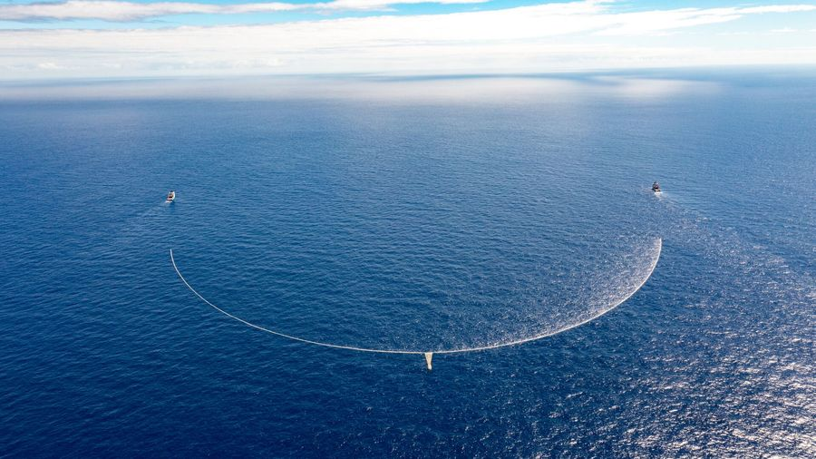
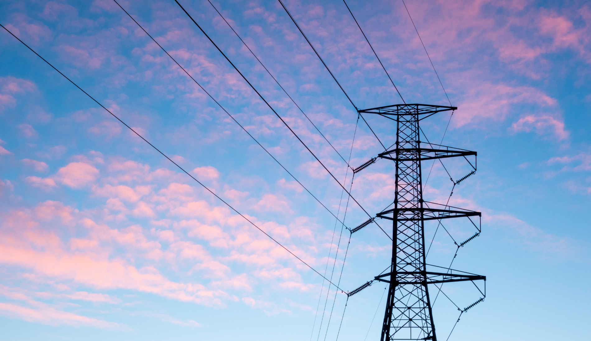

Artificial intelligence is often presented as scalable without consequence. In practice, it depends on physical infrastructure with measurable environmental cost.

Cooling systems required to manage heat generated by data centers.
Explore AI and Water Usage
Electricity used to train models and power continuous inference.
Learn How AI Uses Energy
Semiconductor manufacturing, rare earth extraction, and hardware turnover.
Understand the Material Impact The AI Footprint
The AI Footprint